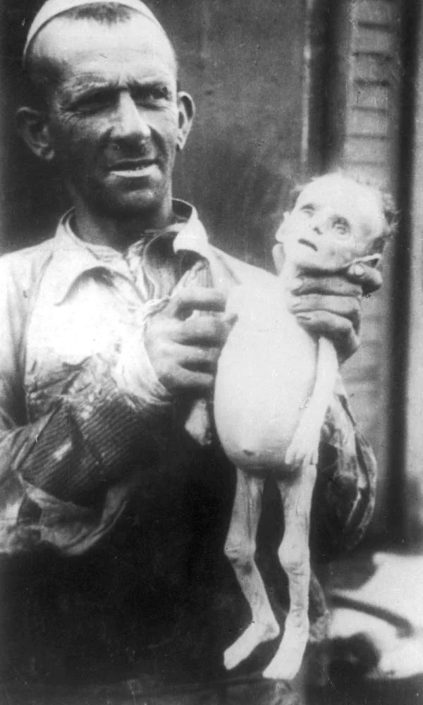
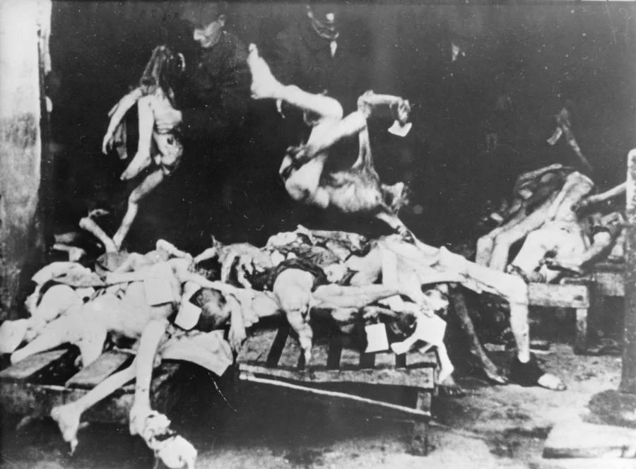
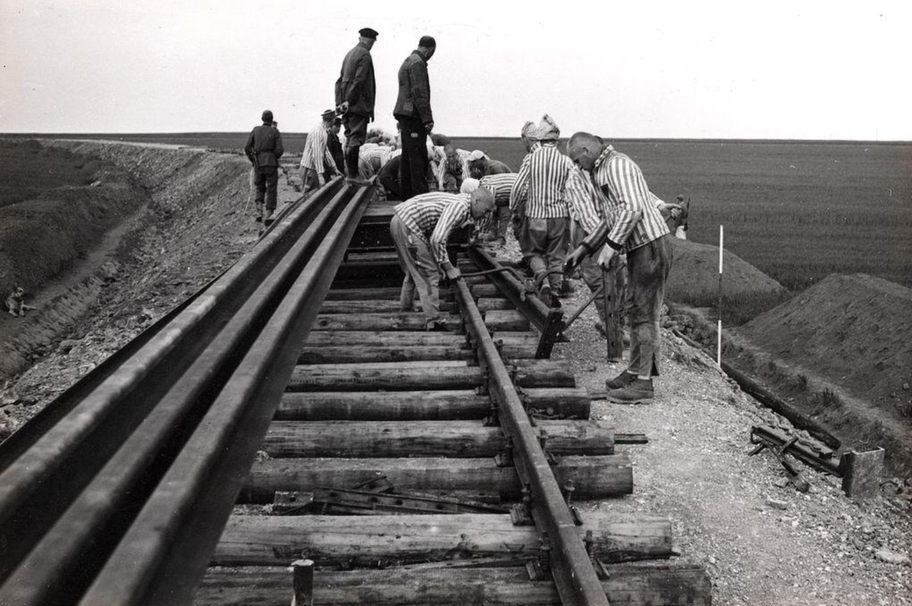
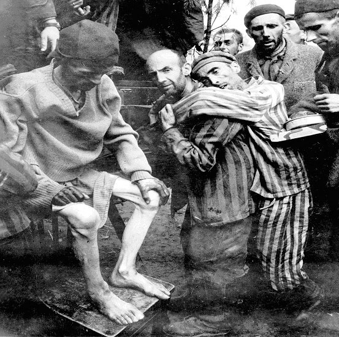

Eigentlich hätte es ein Privileg sein können, in Krakau auf die Welt zu kommen.

Nach Vertreibungen aus zahlreichen Gegenden Europas und vielen Pogromen, die manchmal aus diesem Grund, manchmal aus jenen und manchmal auch ganz ohne Grund stattfanden, lud Kasimir der Große, um 1350 die wenigen überlebenden Juden ein, sich in Krakau niederzulassen. Er war ein merkwürdiger Gesell, den er setzte sich für Bauern und Juden ein, was bis heute sehr untypisch für einen Machthaber ist. Sein Plan ging aber auf. Die Symbiose aus Polen und Juden ließ sowohl die jüdische Gemeinde als auch die Stadt Krakau erblühen.

Das ging 600 Jahre gut, bis die Deutschen kamen und beschlossen, im nahegelegenen Städtchen Oswiecim ihre Industie anzusiedeln.Schon beeindruckend, denn Oswiecim war nicht sonderlich gut erschlossen. Die Deutschen haben erst gezielt eigene Gleise zum Lager verlegt, um den Transport effizienter zu gestalten. Also nicht selber verlegt; verlegen lassen.
Nach dem Krieg wollten Überlebende zurückkehren, doch Krakau war nicht mehr dasselbe. Die Deutschen hatte viel Judenhelfer gehängt, eigentlich alle anständigen Polen. So gab es nur wenige Monate nach der Befreiung der KZs, am 11. August 1945 bereits das erste Pogrom in Krakau seit 600 Jahren. Zudem mussten die Juden feststellen, dass all ihr Besitz seit langem fest in polnischer Hand war.

Dafür war die polnische Regierung sehr hielfreich. Sie förderte zionistische Organisationen und erlaubte den Juden eine problemlose Ausreise, egal wohin, Hauptsache ihr verschwindet. Doch andere Nationen wollten auch keine Überlebenden. Die Briten etwa schreckten selbst nicht davor zurück, Flüchtlingsschiffe vor Haifa, ihrer damaligen Kolonie Palästina, zu rammen und zu entern.
Wie viele Juden bei meiner Geburt noch in Krakau lebten, lässt sich heute schwer sagen. Meine Oma war schon geflohen und selbst die Broders mit dem 1946 geborenen Sohn Henryk hatten Polen bereits verlassen. So waren es nur wenige, vornehmlich alte und kaputte, die einfach nur hier sterben wollten, weil sie nach dem deutschen Holocaust und den polnischen Pogromen keine Kraft für weitere Abenteuer mehr hatten. Und eben meine Mutter.
Im Jahre 2006, als sich die Deutschen anschickten mir auch meine zweite Familie zu nehmen, zählte die jüdische Gemeinde zu Krakau schon wieder 176 Mitglieder. Bevor die Deutschen kamen, waren wir noch 68.000 gewesen.